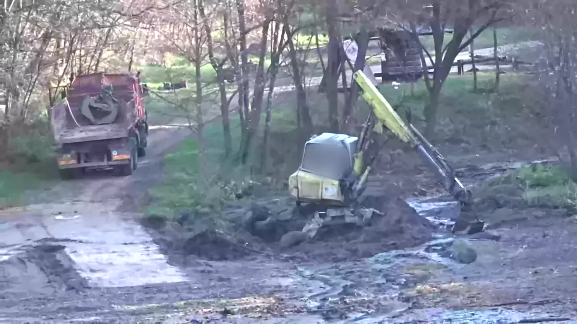

Хвост пути за машиной

Приём. За объектом тянется след последних 2–3 секунд, к хвосту затухает — видно, откуда и куда едет.
У нас. След у самосвала — направление въезд/выезд; пунктир ковша — счёт циклов погрузки.

Приём. За объектом тянется след последних 2–3 секунд, к хвосту затухает — видно, откуда и куда едет.
У нас. След у самосвала — направление въезд/выезд; пунктир ковша — счёт циклов погрузки.